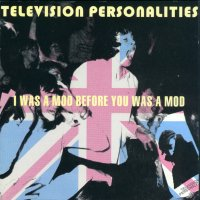

Television Personalities |
 1996 - Overground - OVER41/CD - LP/CD Songs: As John Belushi Said I Was A Mod Before You Was A Mod A Stranger To Myself Little Woody Allen A Long Time Gone Evan Doesn't Ring Me Anymore Things Have Changed Since I Was A Girl Haunted I Can See My Whole World Crashing Down Something Just Flew Over My Head Everything She Touches Turns To Gold
All songs composed and performed by Daniel Treacy Grateful thanks to Liam B. Watson for drums and percussion assistance Special guest artiste Sexton Ming on Things Have Changed Since I Was A Girl Produced by Liam B. Watson at Toe Rag Studios Artwork Conception by Alison Wonderland and Daniel |